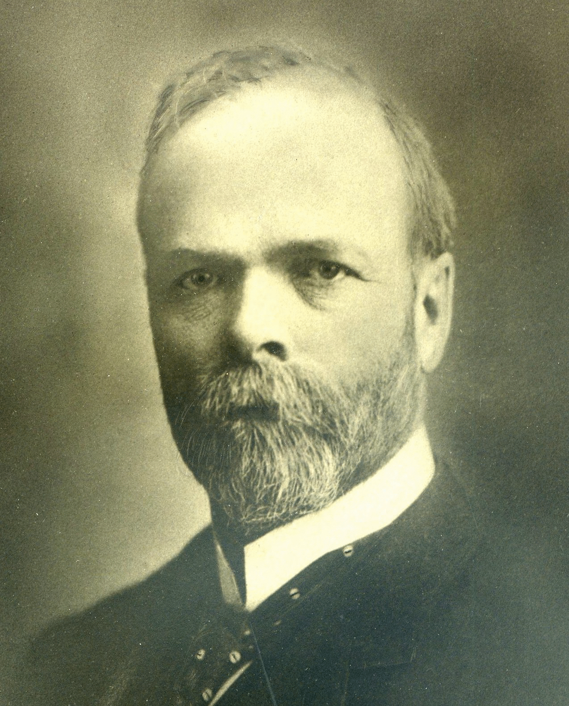

-1-MasterItem.svg)
Stories of Westminster United Church & its People / Page
15
He saw action at St. Eloi and the monumental Battle of Vimy Ridge; once again,
he was thrust into
the thick of history, only this time his role was more than that of a mere
witness. (We are reminded
that it was another Canadian Lieutenant-Colonel, John McCrae, of the Canadian
Grenadier Guards,
who wrote the poem In Flanders Fields.) James requested the flags of the 100th
Winnipeg Grenadier
be brought back to Winnipeg, and hung in the sanctuary of Westminster, where
they remain a 100
years later in honour of James’ memory. He died at age 93 in November of 1945 — outliving his wife
by several decades — and was the last surviving member of the Royal North West Mounted Police.
He is further commemorated today in Winnipeg by J.B. Mitchell School at the
corner of Fleet
and Lanark Streets.
JOHN SIDNEY GRAY, PHYSICIAN
John was born at Heckston, Ontario on January 26, 1850, son of John and Nancy
Gray. He was educated at Iroquois High School and McGill University (1872-1876),
and commenced a medical practice at North Williamsburg, Ontario the same year
he graduated. John moved to Winnipeg five years later. Working initially as a
general practitioner, John’s interests soon gravitated to more specialized areas
of medicine, and he left his new home for Europe to take advanced courses in
gynaecology. Upon his return, he worked as a gynaecologist at the Winnipeg
General Hospital (now the Health Sciences Centre), and would distinguish himself
enough in this
role to be appointed to Chair of Gynaecology at the Manitoba Medical College. He
also served as
Registrar of the College of Physicians and Surgeons of Manitoba (1886-1916). In
1879, John married
Adelaide Lane, and they had three children. He was a member of the Carleton
Club, the Conservative
Party, and the Adanac Club. While the Adanac’s directors claimed no affiliation with the Conservative
Party, it was likely no secret that the entire Conservative caucus of the
Manitoba Legislature drew
its membership from Adanac. John died at home at 67 Kingsway in 1917 and was
buried
in Elmwood Cemetery.

Our Founders